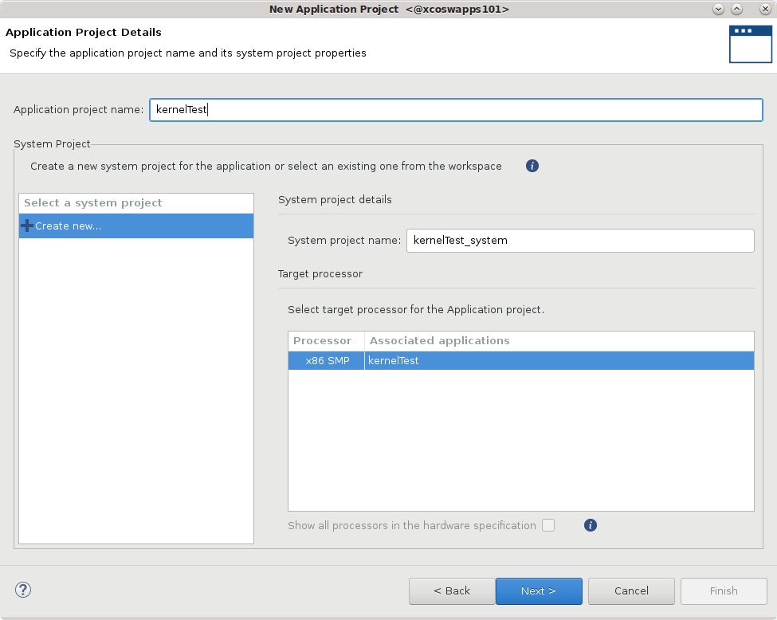
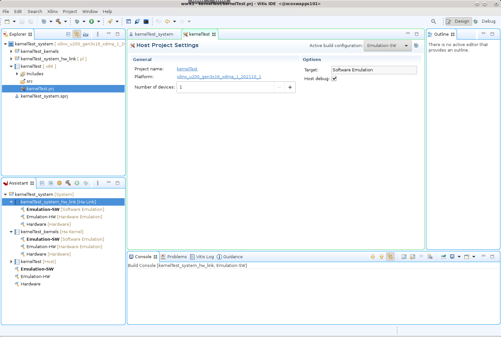

Vitis™ アプリケーション アクセラレーション開発フロー チュートリアル |
Vitis IDE プロジェクトでの RTL カーネルの使用¶
チュートリアル フォルダー (
cd ./01-rtl_kernel_workflow/reference_files) に移動します。work1という名前の新しいワークスペースを作成します。次のコマンドを入力して Vitis IDE を起動します。
vitis -workspace work1
Vitis IDE が開きます。[File] → [New] → [Application Project] をクリックします。
New Application Project ウィザードが開きます。

表示されるプロセスの概要を確認します。[Next] をクリックします。
[Platform] ページが表示されます。
xilinx_u200_gen3x16_xdma_1_202110_1を選択し、[Next] をクリックします。
![[Platform] ページ](../../../../_images/rtl_kernel-platform_page.png)
[Application Project Details] ページが表示されます。次を選択します。
プロジェクト名 (例:
kernelTest) を入力します。[Create New System Project] をオンにします。システム プロジェクト名はプロジェクト名から生成されます。これは、必要に応じて変更できます。
プロセッサは、選択したプラットフォームから自動的に選択されます。
[Next] をクリックします。

[Templates] ページが開き、プロジェクトの作成に使用可能なテンプレートがリストされます。[Empty Application (XRT Native API)] を選択し、[Finish] をクリックして Vitis アプリケーション プロジェクトを作成します。
New Application Project ウィザードが閉じ、Vitis IDE に新規プロジェクトが読み込まれます。

ハードウェア カーネル (.xo) の追加¶
最近生成されたユーザー管理 RTL カーネル (Vadd_A_B.xo) およびホスト コード (user-host.cpp) をプロジェクトに追加する必要があります。
[Explorer] ビューで
kernelTest_kernelsプロジェクトを右クリックし、[Import Sources] をクリックします。rtl_kernel/rtl_kernel.srcs/sources_1/imports/xoフォルダーを指定し、プロジェクトに追加するVadd_A_B.xoカーネル ファイルを選択します。[Finish] をクリックすると、ダイアログ ボックスが閉じ、カーネルが追加されます。

[Hardware Kernel Project Settings] ビューで
kernelTest_kernels.prjプロジェクト ファイルを開き、[Add Hardware Function] をクリックします。Vadd_A_B.xoフォルダーを選択し、Vadd_A_Bカーネルを選択します。[OK] をクリックすると、ダイアログ ボックスが閉じ、プロジェクトにハードウェア関数が追加されます。

[Explorer] ビューで
kernelTestプロジェクトを右クリックし、[Import Sources] をクリックします。src/hostフォルダーを指定し、プロジェクトに追加するuser-managed.cppファイルを選択します。[Finish] をクリックすると、ダイアログ ボックスが閉じ、ホスト コードが追加されます。
ヒント: RTL カーネルの ap_ctrl_hs バージョンに接続するために使用できる xrt-host ファイルもあります。

Vitis IDE が開きます。[File] → [New] → [Application Project] をクリックします。
New Application Project ウィザードが開きます。
表示されるプロセスの概要を確認します。[Next] をクリックします。
[Platform] ページが表示されます。
xilinx_u200_gen3x16_xdma_1_202110_1を選択し、[Next] をクリックします。
[Application Project Details] ページが表示されます。次を選択します。
プロジェクト名 (例:
kernelTest) を入力します。[Create New System Project] をオンにします。システム プロジェクト名はプロジェクト名から生成されます。これは、必要に応じて変更できます。
プロセッサは、選択したプラットフォームから自動的に選択されます。
[Next] をクリックします。
[Templates] ページが開き、プロジェクトの作成に使用可能なテンプレートがリストされます。[Empty Application (XRT Native API)] を選択し、[Finish] をクリックして Vitis アプリケーション プロジェクトを作成します。
New Application Project ウィザードが閉じ、Vitis IDE に新規プロジェクトが読み込まれます。
ハードウェア カーネル (.xo) の追加¶
最近生成されたユーザー管理の RTL カーネル (Vadd_A_B.xo) およびホスト コード (user-host.cpp) をプロジェクトに追加する必要があります。
[Explorer] ビューで
kernelTest_kernelsプロジェクトを右クリックし、[Import Sources] をクリックします。rtl_kernel/rtl_kernel.srcs/sources_1/imports/xoフォルダーを指定し、プロジェクトに追加するVadd_A_B.xoカーネル ファイルを選択します。[Finish] をクリックすると、ダイアログ ボックスが閉じ、カーネルが追加されます。
[Hardware Kernel Project Settings] ビューで
kernelTest_kernels.prjプロジェクト ファイルを開き、[Add Hardware Function] をクリックします。Vadd_A_B.xoフォルダーを選択し、Vadd_A_Bカーネルを選択します。[OK] をクリックすると、ダイアログ ボックスが閉じ、プロジェクトにハードウェア関数が追加されます。
[Explorer] ビューで
kernelTestプロジェクトを右クリックし、[Import Sources] をクリックします。src/hostフォルダーを指定し、プロジェクトに追加するuser-managed.cppファイルを選択します。[Finish] をクリックすると、ダイアログ ボックスが閉じ、ホスト コードが追加されます。
ヒント: RTL カーネルの ap_ctrl_hs バージョンに接続するために使用できる xrt-host ファイルもあります。
プロジェクトのビルド¶
ホスト アプリケーション コード (host.cpp) および RTL カーネル コード (Vadd_A_B.xo) をプロジェクトに追加したら、プロジェクトをビルドして実行できます。
[Hardware Kernel Project Settings] ビューで [Active build configuration] を [Emulation-HW] に設定します。ハードウェア エミュレーションは、次のような場合に有益です。
FPGA に含まれるロジックの機能を検証。
アクセラレータおよびホスト アプリケーションの初期パフォーマンス見積もりを取得。
RTL カーネルはソフトウェア エミュレーションをサポートしません。
重要: RTL カーネルへの C モデルの追加で説明されているように、ソフトウェア エミュレーション用の C モデルを XRT 管理カーネルに追加することはできますが、これはユーザー管理カーネルではサポートされません。
[Assistant] ビューで、最上位のシステム プロジェクト (
kernelTest_system) を選択して [Build] (![[Build] コマンド](../../../../_images/icon_build.png) ) をクリックし、アクティブな [Emulation-HW] ビルド コンフィギュレーションをビルドします。
) をクリックし、アクティブな [Emulation-HW] ビルド コンフィギュレーションをビルドします。Vitis アプリケーション プロジェクトのさまざまな要素 (プロセッサ コード (
host.cpp)、RTL カーネル (.xo) をターゲット プラットフォームにリンクするハードウェア リンク プロジェクト、デザインをパッケージする最上位システム プロジェクト) がビルドされます。ヒント: RTL カーネルは
.xoファイルとしてインポートされるため、カーネルをコンパイルする必要はありません。[Assistant] ビューで [Run] ボタンをクリックし、[Run Configurations] を選択します。
System Project Debugコンフィギュレーションを選択し、[New launch configuration] () をクリックして、実行用の新しいコンフィギュレーションを作成します。SystemDebugger_kernelTest_systemコンフィギュレーションが作成されます。ホスト プログラムは、
xclbinファイルを入力引数として受け取ります。これは、[Program Arguments] リストで指定する必要があります。Program Argumentsの横にある [Edit] をクリックします。[Automatically update arguments] がオンになっている場合は、
xclbinファイルが自動的に検索され、含まれます。[OK] をクリックして引数を追加します。
Run Configurationsダイアログ ボックスで [Apply] をクリックし、[Run] をクリックしてコンフィギュレーションを実行し、結果を確認します。
Vitis IDE の [Console] ウィンドウに「TEST PASSED」と表示されます。ユーザー管理 RTL カーネルを使用してアプリケーションをビルドして実行しました。
(オプション) ターゲット プラットフォームでのハードウェアのビルドと実行¶
[Vitis Application Project Settings] で [Active build configuration] を [Hardware] に変更します。
システム コンフィギュレーションでは、カーネル コードが FPGA にインプリメントされるので、選択したプラットフォーム カードで実行されるバイナリが生成されます。使用可能なハードウェア プラットフォームがある場合は、ハードウェアをビルドして実行し、結果を検証してください。
makefile の使用¶
01-rtl_kernel_workflow/reference-files フォルダーに含まれている makefile があります。このファイルを使用して次のターゲットを作成できます。
make run TARGET=<hw_emu | hw> HOST=user
makefile は次を実行します。
Vivado プロジェクトをビルドして RTL デザイン IP をパッケージし、ユーザー管理カーネル (
.xo) をパッケージするVitis コンパイラ (
v++) を使用してカーネルをターゲット プラットフォームにリンクし、.xlcbin ファイルを生成するXRT ネイティブ API ホスト アプリケーションをコンパイルする
./src/host/user-host.cpp(必要な場合) エミュレーション プラットフォームを生成し、エミュレーション環境を設定する
アプリケーションおよびカーネルを実行する
ヒント: makefile
-nオプションを使用すると (make run TARGET=hw_emu HOST=user -n)、コマンドを実行せずにコマンド ラインを生成できます。
サマリ¶
このチュートリアルでは、[Package IP/Package_XO] フローを使用してユーザー管理 RTL カーネルを作成しました。RTL IP プロジェクトを Vitis コンパイラで必要とされるコンパイル済み XO ファイルにパッケージしました。RTL カーネルをアプリケーション プロジェクトに追加し、ホスト コードと組み合わせて、ハードウェア エミュレーション コンフィギュレーションをビルドして実行しました。 Vitis IDE で、XO ファイルを使用してバイナリ コンテナーを作成し、xclbin ファイルをコンパイルしました。
Copyright© 2020 Xilinx